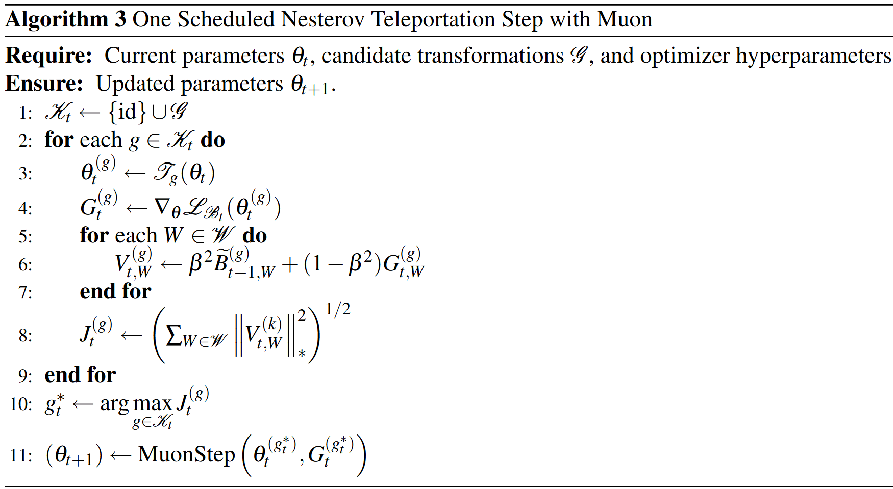

Muon Teleportation
Searching over equivalent parameterizations to find better update directions for Muon.
Muon stepTeleport, same loss
Method

Results
Final performance
Training curves
CIFAR-1015 epochs
Lines show the mean over five seeds and shaded bands the min–max range. Dashed lines are runs without teleportation.